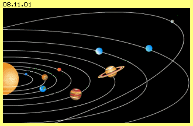
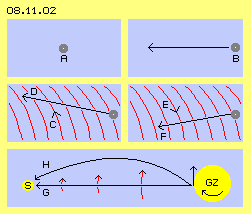
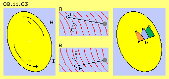
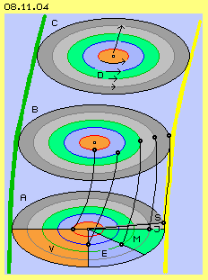

Erscheinung am Rande
In vorigem Kapitel wurde dargestellt, welch winzige Erscheinung unser Sonnensystem ist: eine drehende Scheibe in einem Randwirbel an der Innenseite eines Spiralarmes der Galaxis. Die Photomontage in Bild 08.11.01 zeigt das Ensemble dieses Ringelspiels, natürlich nicht in realem Maßstab.

Im Zentrum steht die Sonne mit ihrer übermächtigen Masse von etwa 98 % des gesamten Systems. Um die Sonne rotieren die neun (bzw. nurmehr acht) Planeten. Sie drehen alle (nahezu) auf gleicher Ebene (nur Merkur ganz innen und Pluto ganz außen weichen wesentlich davon ab). Diese ´Ekliptik´ ist die Drehscheibe, auf welcher das Geschehen um die Sonne ihren Lauf nimmt. Das Bewegungsmuster der Ekliptik wird nachfolgend diskutiert. Zuvor müssen aber nochmals einige Gesichtspunkte des vorigen Kapitels aufgegriffen werden.
Bewegung im Raum
Der Freie Äther ist Bewegung auf ´Spiralknäuelbahnen´, die sich aus der Überlagerung vieler Bewegungen ergeben und insgesamt neutral sind. Diese ´reine´ Version Freien Äthers gibt es aber nur in ´ruhigen´ Bereichen des Kosmos. In Bild 08.11.02 ist dieser Äther in der oberen Zeile als hellblaue Fläche repräsentiert. Wenn in diesem ruhigen bzw. total neutralen Äther ein Bereich Gebundenen Äthers ´kräftefrei schwebt´, z.B. die Wirbelsysteme eines Elektrons, Atoms oder Staubkorns ohne Vorwärts-Impuls, ist dieser Ätherwirbel A (grau) tatsächlich ortsfest im Raum.
Wenn dieser Wirbel einen Vorwärts-Impuls aufweist (siehe Pfeil bei B), bewegt sich dieser Wirbel geradlinig und mit konstanter Geschwindigkeit im Raum vorwärts. Nur im lückenlosen Äther ist diese Bewegung ohne allen ´Reibungsverlust´ möglich (und nur unter dieser Bedingung kann der Energie-Erhaltungssatz überhaupt Gültigkeit haben). Diese geradlinige und konstante Bewegung kann aber nur in Bereichen dieses wirklich neutralen Äthers statt finden. Nur dieser ´reine´ Äther bietet die Verhältnisse, welche ansonsten einem ´reinen Vakuum´ zugeordnet werden (das es allerdings nur als theoretische Fiktion gibt). Für diese Ideal-Form von Bewegung (materieller Erscheinungen) sind die Begriffe ´kinetische Energie´ sowie ´Trägheit bewegter Körper´ zutreffend.
Normalerweise aber ist der Äther in kreisenden Bewegungen, praktisch immer mit Überlagerungen, woraus zwingend immer eine ´Bahn-mit-Schlag´ entsteht, d.h. eine Zeit-Hälfte mit relativ geringem Weg und eine mit relativ weitem Weg. Weil alle benachbarten Ätherpunkte sich analog verhalten müssen, gibt es gleichartige Ätherbewegung in weiten Räumen, wie z.B. im vorigen Kapitel zur Milchstrasse dargestellt wurde. Alle Atome bzw. deren Wirbelsysteme werden deformiert, indem sie etwas zurück gedrückt und etwas weiter nach vorn geschoben werden in Richtung dieses Schlagens.
Driften
So wie das ´ruhende´ Staubkorn A in reinem Äther schwimmt (ortsfest im Raum), so schwimmt es auch ohne eigenen Vorwärts-Impuls mit diesem Schlag, also ´ortsfest´ hinsichtlich der generellen ´Äther-Strömung´. In diesem Bild in der mittleren Zeile ist dieses generelle Schlagen (was diese ´Strömung´ real nur ist) durch gekrümmte rote Linien repräsentiert.

Eingezeichnet ist wiederum ein lokales Wirbelsystem (grau) mit einem Bewegungs-Impuls waagerecht nach links. Wenn nun aber dieses generelle Schlagen nach links aufwärts gerichtet ist (siehe Pfeil C), wird dieses Elektron, Atom, Staubkorn oder ein ganzer Himmelskörper natürlich weiter nach oben-links (siehe Pfeil D) im Raum ´getragen´. Wenn umgekehrt dieses generelle Schlagen nach unten-rechts gerichtet ist (siehe Pfeil E) wird selbstverständlich dieses lokale Wirbelsystem nicht so weit voran kommen und nach unten abdriften (siehe Pfeil F). Ein ´ruhendes´ Wirbelsystem (ohne eigenen Vorwärts-Impuls, wie oben bei A) driftet einfach in die Richtung des generellen Schlagens.
Bei voriger Galaxis weist aller Äther diesen Schlag rund um das Zentrum auf. Die um das Zentrum kreisenden Himmelskörper bewegen sich nicht aufgrund eines Bewegungs-Impulses, sondern driften nur in der Ätherbewegung-mit-Schlag, die letztlich rundum verläuft. Diese Himmelskörper weisen keine tangential nach außen gerichtete Trägheit bzw. entsprechende Fliehkraft auf - und müssen darum auch nicht per Anziehungskraft nach innen gezogen werden. Auch wenn sich Körper aufgrund eines Impulses im Raum vorwärts bewegen, (obiges D und F) sind die beobachteten Geschwindigkeiten und Richtungen nur ´Brutto´-Daten, weil sie immer inklusiv der generellen Äther-Bewegung sind (innerhalb des Sonnensystems z.B. relevant bei Kometen).
Materie bewegt sich nicht in einem Vakuum geradlinig und konstant. Die lokalen Ätherwirbel materieller Erscheinungen driften immer in den jeweiligen Richtungen des Äther-Schlagens innerhalb der Potentialwirbel der Milchstrasse und ebenso des Sonnensystems. Wenn die Körper nicht ´ruhend´ sind, sondern einen eigenen Vorwärts-Impuls haben, wird ihr Weg und ihre Geschwindigkeit immer durch das Muster des lokalen Äther-Schlages beeinflusst. Die Begriffe von Masse und Impuls, von Trägheit und Fliehkraft werden konventionell so gehandhabt, als fänden alle Prozesse im Vakuum statt. Die Realität des Äthers ist eine andere - und entsprechend anders sind die Beobachtungen zu werten - und müsste ganz anders gerechnet werden.
Licht im Raum
Licht ist ebenfalls ein Äther-Wirbel, der allerdings nur zustande kommt aufgrund eines Impulses (die ´Geburt eines Photons´ wurde kurz beschrieben in Kapitel 03.11. ´Wandernde Potentialwirbelwolken´. Die detaillierte Beschreibung der ´Phänomene´ des Elektromagnetismus erfolgt später in einem separaten Teil der Äther-Physik). Licht kann nicht ruhend sein, sondern muss sich immer vorwärts bewegen. Genauso wie bei den Wirbelsystemen materieller Erscheinungen wird die Richtung und Geschwindigkeit des Lichts selbstverständlich durch jedes lokale Äther-Schlagen beeinflusst. Auch Licht breitet sich geradlinig und konstant nur theoretisch im Vakuum aus - nicht aber in der Äther-Realität.
In diesem Bild 08.11.02 ist unten der Weg des Lichtes vom Galaxis-Zentrum (GZ) zum Sonnensystem (S) dargestellt. Das Licht eines Sternes wird z.B. in radiale Richtung abgestrahlt, aber es läuft nicht radial nach außen (wie Pfeil G anzeigt). Der Stern rotiert mit dem galaktischen Zentrum und das ausgesandte ´Photon´ hat natürlich auch diesen Impuls in tangentiale Richtung (siehe Pfeil nach oben). Der Lichtstrahl läuft im Raum diagonal vom Stern weg, weil der Stern selbst in der entsprechenden Äther-Bewegung driftet und auch danach ist noch immer der gleiche Äther-Schlag gegeben.
Erst weiter außen wird dieses Schlagen reduziert (letztlich vom Freien Äther der Galaxis-Umgebung) und die Galaxis dreht dort langsamer (siehe rote Pfeile). Entsprechend wird die Vorwärts-Richtung des Lichtes ´eingebremst´. Das Licht vom galaktischen Zentrum erreicht das Sonnensystem auf einer gekrümmten Bahn, wie schematisch durch Pfeil H markiert ist.
Beim Blick auf das galaktische Zentrum sehen wir also nicht nur das Bild der dortigen Situation vor 26000 Jahren - wir sehen das galaktische Zentrum auch in der falschen Richtung. Dieses Licht durchquerte die inneren Spiralarme, wo es selbstverständlich auch wieder den Turbulenzen dortiger Ätherbewegungen ausgesetzt war. Dabei kann nicht ausbleiben, dass diese Licht-Wirbel ´verzerrt´ werden, d.h. die Rot-Verschiebung keinesfalls nur aufgrund des ´Doppler-Effektes´ zustande kommt (was andere ohnehin schon umfangreich dokumentiert haben).
Schub durch Strahlung
Im vorigen Kapitel wurde dieses generelle Schlagen vom galaktischen Zentrum auswärts und der entgegen wirkende Widerstand des Freien Äthers beschrieben. Beide ´Kräfte´ können nicht frontal auf der galaktischen Ebene ausgeglichen werden, vielmehr weichen die Bewegungen in die dritte Dimension bzw. unterschiedliche Ebenen aus (wie im Bild 08.10.06 des vorigen Kapitels mit H und I gekennzeichnet wurde). Daraus resultiert der Randwirbel, in welchem die Ekliptik eine drehende Scheibe darstellt. In Bild 08.11.03 links ist dieses Sonnensystem mit dem diagonal einwärts gerichteten Schlagen M und dem auswärts gerichteten Schlagen N skizziert (wobei wie immer das galaktische Zentrum auf der rechten Seite unterstellt ist).

Auch schon weiter rechts vom Randwirbel wird das Schlagen in den beiden Ebenen unterschiedlich sein, oben relativ rasch auswärts und unten langsam einwärts. Bei A und B ist dieses differenzierte Schlagen durch die roten Linien schematisch dargestellt. Das vom galaktischen Zentrum ausgehende Licht ist hier durch graue ´Photon´-Punkte repräsentiert. Wenn der generelle Schlag nach oben-auswärts weist (wie durch Pfeil C angezeigt ist), wird dieser Licht-Wirbel beschleunigt nach oben getragen (siehe Pfeil D). Wenn der Licht-Wirbel im Bereich des generellen Schlagens nach unten-einwärts (siehe Pfeil E) fliegt, wird er langsamer und in diese Richtung abgelenkt (siehe Pfeil F). Materie ist nichts Festes und genauso ist ein Photon kein ´Teilchen´. Beides sind nur Wirbel von Äther im Äther und beide werden darum gleichermaßen vom generellen Schlagen beeinflusst.
Der wesentliche Unterschied zwischen ´materiellen´ Wirbeln und Licht-Wirbeln ist jedoch, dass die Staubkörner in aller Regel ohne eigenen Vorwärts-Impuls, also nur ´passiv´ im Äther-Schlagen driften, während elektromagnetische Wellen ´aktiv´ durch den Äther eilen. Das Bewegungsmuster des Lichtes ist sehr einfach und äußerst konform zur generellen Ätherbewegung. Licht hat keine ´sperrige´ Wirbelstruktur und darum wird einem Photon keine ´Masse´ zugerechnet. Wenn es aber auf ´sperrige´ Äther-Bewegung trifft, hat es durchaus Schub-Wirkung. Das Äther-Schlagen der Ekliptik-Scheibe bietet sperrigen Widerstand, besonders wenn darin Wirbelsysteme materiellen Staubes - oder auch ein Planet driften.
Die ´kinetische Energie´ eines Licht-Wirbelchens ist gewiss sehr gering, aber vom galaktischen Zentrum her rasen pausenlos solche ´Störungen´ durch den Äther, neben sichtbarem Licht alle Art von Strahlung und andere ´Erschütterungen´ (die von manchen ´Gravitations-Wellen´ benannt werden). Die antreibend Kraft im Sinne der Ekliptik-Drehung ist nochmals geringer: lediglich die geringe Differenz zwischen der unteren und oberen ´Etage´ (also zwischen H und I bzw. D und F in vorigem Bild).
In diesem Bild links ist noch einmal die Ekliptik-Scheibe eingezeichnet und durch Pfeile G diese Schub-Komponente der vom galaktischen Zentrum eintreffenden ´Störungen´ eingezeichnet. Wenn damit ein Staubkorn außen an der Ekliptik einen bestimmten Weg im Drehsinn vorwärts geschoben wird (grün), so ergibt der gleiche Schub bzw. Weg weiter innen einen größeren Drehwinkel (blau), so dass die Winkelgeschwindigkeit des Staubes bzw. des Planeten nach innen größer ist (rot markiert). Nur ganz innen (etwa vom Merkur einwärts) ist die Differenz aus voriger Schichtung kaum mehr wirksam, d.h. dort findet keine Drehbeschleunigung mehr statt.
Langgezogene Spiralbahn
In Bild 08.11.04 ist die Ekliptik-Scheibe nochmals dargestellt aus anderer Perspektive (links grün die Spiralarm-Seite, rechts gelb die Seite zum galaktischen Zentrum). Bei A sind schematisch die Bahnen einiger Planeten eingezeichnet, um die Größenordnung der unterschiedlichen Winkelgeschwindigkeiten zu veranschaulichen. Wenn die Venus (V, roter Sektor) z.B. eine Drehung von 90 Grad ausführt, dreht die Erde (E, blau) um 60 Grad, der Mars (M, grün) noch 30 Grad, Jupiter (J, hellgrau) nur 5 Grad und Saturn (S, dunkelgrau) kaum um 1 Grad. Die äußeren Planeten bewegen sich dabei mit bescheidenen 4 bis 7 km/s im Raum, die beiden ´Riesen´ Saturn und Jupiter mit etwa 10 bis 13 km/s, Mars und Erde mit etwa 24 und 30 km/s, Venus und Merkur nochmals schneller mit 35 und 48 km/s.

Zugleich aber fliegt die ganze Ekliptik-Scheibe mit diesen 220 oder auch 280 km/s im Randwirbel vorwärts bzw. um das galaktische Zentrum herum. In diesem Bild ist bei B die Ekliptik-Scheibe noch einmal eingezeichnet und die Planeten-Positionen um obige Winkel vorgerückt. Wir bewegen uns nicht drehend im Raum, sondern ´schrauben´ uns auf einer sehr lang gestreckten Spirale vorwärts (siehe schwarze Kurven), die inneren Planeten schneller drehend als die äußeren.
Kein sauberer Wirbel
Von all dem merken wir rein gar nichts, weil die Erde noch immer nur ´passiv´ in diesem Äther-Schlagen mit driftet. Die Situation ist aber insofern eine andere, als der Staub und die Planeten nun über das ´aktive Element´ des Lichtes und sonstigen Strahlungsdrucks selbst zum Antreiber der Ekliptik-Drehung werden.
Der Randwirbel am inneren Rand des Spiralarms kommt zustande zum Ausgleich der galaktischen Drehung zur etwas langsameren Drehung im Bereich des Spiralarms (und letztlich zum ´ruhenden´ Freien Äther am Rande der Galaxis). Die eigentliche Reibung findet im Bereich der Oortschen Wolke statt (etwa 100 Astronomische Einheiten von der Sonne entfernt). Dadurch ergibt sich die Linksdrehung der Ekliptik (gegenläufig zur Galaxis-Drehung). Die relativ geringe Geschwindigkeit von nur wenigen km/h der äußeren Planeten zeigt an, dass die Ekliptik außen mit geringer Drehzahl angetrieben wird. Weiter nach innen verhält sich die Ekliptik nicht wie ein starres Rad, sonst wäre bis zum Zentrum diese geringe Winkelgeschwindigkeit gegeben.
Durch den generellen All-Druck wird der Staub nach innen gedrückt und tatsächlich sind davon auch 98 % im Zentrum als Sonne angekommen. Aus rein mechanistischer Sicht bzw. der Konstanz der Drehmomente müsste die Winkelgeschwindigkeit nach innen in Relation der Radien linear ansteigen - aber auch das ist nicht der Fall. Die Sonne selbst dreht z.B. am Äquator nur mit etwa 2 km/s, also nur so schnell wie die Oortsche Wolke. Die Rechnung rein nach mechanischem Drehmoment ist nicht stimmig bzw. stimmt nur, wenn den Planeten ´zutreffende´ Eigenrotation und/oder Masse zugewiesen wird (was nicht stimmig ist, siehe nächste Kapitel).
Ein ´sauber-drehender´ Potentialwirbel ergibt sich nur, wenn die Drehbewegung vom Zentrum her ausgelöst wird (und durch Außen-Druck beschleunigt wird). Dann sind die Winkelgeschwindigkeiten nach außen progressiv abfallend in einem klaren Verhältnis. Aber auch das ist bei der Ekliptik bzw. den Bewegungen der Sonnen und ihrer Planeten nicht gegeben.
Die Ekliptik ist weder ein starrer Wirbel noch ein Potentialwirbel, vielmehr weisen deren Himmelskörper höchst unterschiedliche Drehung und Rotation auf. Das Sonnensystem ist keine isolierte Angelegenheit einer dominanten Sonne und davon abhängiger Planeten im reinen ´Vakuum´. Die Sonne bildet vielmehr einen ziemlich eigenständigen Wirbel (siehe nächstes Kapitel), der im Zentrum des Randwirbels relativ ungestört dreht. Die Bewegungen der Planeten aber werden von außen bestimmt, einerseits indem sie innerhalb des Randwirbels driften auf lang gestreckten Spiral-Bahnen. Andererseits erfahren sie ungleichförmige Beschleunigung aus unsymmetrischem Strahlungs-Druck, besonders aus Richtung des galaktischen Zentrums.
Der Staub bzw. die Planeten werden im Drehsinn der Ekliptik beschleunigt. So wie ´passive´ Himmelskörper die Bewegung des Äther-Schlagens aufnehmen, so wird umgekehrt durch die beschleunigt drehende Materie auch der dort befindliche Äther diese Bewegung annehmen. Die materiellen Wirbel bringen praktisch die Überlagerung ein, welche ein zutreffendes Äther-Schlagen ergibt (sofern es eine konstante und starke materielle Strömung ist, bei irdischen Experimenten z.B. nachweisbar durch extrem schnell drehende Stahl-Zylinder).
Allerdings wird das Mit-Drehen des Äthers nicht ganzflächig homogen sein, vielmehr werden Planeten teilweise auch ´Wirbelstrassen´ hinterlassen oder es bilden sich ganze Bereiche relativ turbulenter Äther-Bewegungen wie z.B. im Asteroiden-Gürtel. Jeder Planet schafft sich praktisch seinen eigenen Gürtel mehr oder weniger zutreffender Äther-Bewegung (siehe übernächstes Kapitel).
Es ist klar, dass die Ekliptik auf ihrer Wanderung im Raum auch Spuren dieser ´Turbulenzen´ hinterlässt (in obigem Bild unten). In diesem Bild ist oben bei C noch eine Ebene in diesem Randwirbel eingezeichnet. Auch wenn dort keine Sonne und keine Planeten vorhanden sind, wird auch dort der Strahlungs-Druck über die Beschleunigung aller Staubpartikel eine entsprechende Rotation bewirken mit zunehmender Winkelgeschwindigkeit dortigen Äthers nach innen (siehe Pfeile D). Wenn die Ekliptik-Scheibe an diesen Ort kommt, trifft sie auf schon ´vorbereitete´ Äther-Bewegungen. Zum andern ergibt sich daraus, dass auch in Bereichen ohne Sterne und Planeten der Äther in vielfältigen Wirbeln in Bewegung ist, keinesfalls immer vollkommen gleichförmig - und dass damit praktisch alles auf der Erde eintreffende Licht ´verunstaltet´ ist.
Chaotisches Räderwerk
Seltsamerweise steht die Achse der Sonne nicht senkrecht zur Ekliptik - und schon daraus ist erkennbar, dass die Planeten nicht von der Sonne ´mit-gezogen´ werden im Sinne eines Potentialwirbels. Diese Achsneigung der Sonne von rund 7 Grad ist nur aufgrund ´Äther-Reibung´ zu erklären. In vorigen Bildern wurde die Ekliptik als diagonal stehende Scheibe gezeichnet, die oben-links zum Spiralarm weist. Die dortige Außen-Seite der Ekliptik-Scheibe wird am stärksten abgebremst durch den relativ langsamer drehenden Spiralarm. Die entsprechende Innen-Seite kann dagegen ungehindert drehen. Bezogen auf die Linie zum galaktischen Zentrum weist die Achse der Sonne darum etwas nach hinten (bezogen auf die galaktische Drehung).
Die Planeten kommen auf ihrer Bahn nochmals näher an diese ´Bremsfläche´ heran, was eine stärkere Achsneigung bedingt, z.B. von 23 bis 29 Grad bei Erde, Mars, Saturn und Neptun. Allerdings weichen die anderen Planeten davon ab, z.B. liegen die Achsen von Merkur, Venus und Jupiter praktisch auf der Bahnebene, während Uranus quer dazu steht. Genauso ´ungereimt´ sind die Verhältnisse bei der Rotation der Planeten um ihre eigene Achse. Jeder Planet hat offensichtlich sein eigenes ´Schicksal´.
Das Sonnensystem ist keine ´Himmelsmechanik´, welche seit Milliarden Jahren mit mathematischer Präzision abläuft. Wiederholt gab es katastrophale Störungen durch externe ´Eindringlinge´ oder durch Kollisionen zwischen Planeten. Auch diese erfolgen nicht nur alle paar Millionen Jahre, vielmehr erfolgten die Sintflut, der Untergang von Atlantis und Polsprünge in ´geschichtlicher Zeit´. Darüber berichten z.B. Zecharia Sitchin und Immanuel Velikovsky detailliert. Martin Lutze hat beispielsweise in Oberbayern geologische Spuren nachgewiesen, welche vor nur 2700 Jahren das Wasser des Mittelmeeres hinterließ, nachdem es über die Alpen geschwappt war.
Die Bahnen von Erde, Venus und Mars kamen sich mehrmals so nahe, das gewaltige ´Gravitationskräfte´ katastrophale Verhältnisse schufen. Real wurde aber keine ´Gravitation´ wirksam. Alle Himmelskörper sind in erster Linie riesige Äther-Wirbel und haben keine feste Grenzen. Sie reichen viel weiter in den Raum hinaus als es die mittige ´Ansammlung von Staub´ erscheinen lässt. Durch unterschiedliche Umlaufgeschwindigkeit und Eigenrotation treffen im Raum - noch bei großem Abstand der sichtbaren Planeten-Oberflächen - gegenläufige Äther-Bewegungen zusammen - und wie bei voriger ´Bremsfläche´ werden die Achsen herum gewirbelt, ganze Meere hoch gerissen und die Erdkruste erschüttert oder gar verschoben.
Kein Planet driftet für alle Zeiten in einem ´ruhigen Meer´ von Äther, jeder hat offensichtlich seine eigene, höchst bewegte Geschichte. Wie ´unberechenbar´ das Wirbeln und Brodeln des Äthers sein kann, zeigt nicht zuletzt die Sonne (deren Bewegungsmuster im folgenden Kapitel diskutiert wird). Die Sonne spendet mit ihrem Licht zwar die Lebensgrundlage auf der Erde, aber sie dominiert z.B. nicht per Anziehungskraft über die Planeten, vielmehr ist alles Geschehen im Sonnensystem von den übermächtigen Bewegungen in der Galaxis bestimmt.